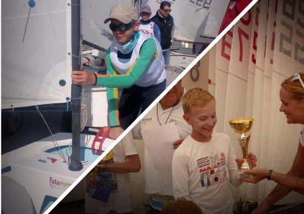

MY LIFE |
||||
HOME |
PARENTS |
SPORTS |
ABOUT ME |
I'M PROGRAMMER |
My Sports |
|
Hockey in the Crimea
I started hockey in the beginning 2013. My mum brought me walking skates from Slovenia. I didn't even know how to hold balance on the ice. But when I came to the hockey team, my experience began with the same high speed as a bruises on different parts of the body. We bought whole equipment for hockey, some of it wasn't new. But I was happy to had it, especially hamlet. It was yellow color, and the first owner of it was from the Pittsburgh Penguin's team.This helmet has become my talisman! In the Crimean hockey I was 3 year and 6 months. There was a time of bright sports life and a heavy training process. Sometimes we had 2 training per day in ice and one in grass. I traveled a lot with my team. Several times we were on Sochi in the large ice arena, also we were in St. Petersburg and in Adler. I got lot of medals and cups. But most important for me was a silver PUCK! I got it as the best defender of the tournament in Sochi in the 2015. |
|
Hockey in the SloveniaIn the summer of 2016 I came to a hockey camp in Slovenia. It was 10 days and included: 3 ice and 1 grass every day. I liked Slovenia very much and I decided to stay here. My parents wrote me into the best club in the country - Olympia. And I trained under the excellent coaches, but I played almost the whole year in a very weak team.My mum drives me 4 times a week to Ljubljana. It was 250 km in two ways. So, during the year we'd got more then 60.000 km. I traveled all the neighboring countries. He played in Croatia, Hungary, Austria and, of course, on the all ice fields of Slovenia. I took part in the international cup, where our team got 3rd place. But it was the team from the Olympia's club. This year I was invited to play in the team of Olympia in group A. |
|
Start in yachtingThis summer (2017) in July my mother advised me to try yachting. I never sailed and I'd got interest for yachting. We spent 10 days courses on the sea, where we were every day from 9 am to 15 pm. We also had lunch in an Italian school and a little rest on land. After the main courses I went on individual part and then there were advanced courses on yachting, at the end of August 2017. We had great event: us accepted in sailor ) In the September there was the first big regatta for beginners. In it were more than 50 sailing boats from all over Slovenia. On my first regatta I took 2nd place and decided to practice yachting - professionally. Every weekend I have training sessions from 9.00 am to 2.00 pm. |
|

I'm PRO in yachtingI already took part in two major regattas: 1. Open national championship of yachting in yacht class - "Optimist". This regatta was for three days from 15 to 17 September 2017, the number of participants were 175 people. There are were different countries: Cyprus, Malta, Italy, Croatia, USA, England, Spain and of course Slovenia.In this regatta, I at first skilled strong wind At the end of September and the beginning of October was fantastic regata, named Barcolana Young 2017" it was two days in the Trieste in Italia. It's not far from my small town. The scale of this regatta is 320 yachts - the type of the Optimist. I was among the Cadets - 170 participants. At the first day I came - 68, at the second I took 10 plaсe. My coach and the precedent of my club said that this is a very high result for a beginner in yachting. I was really happy! Especially I was delighted with the prizes! |
|
My first experience in the water poloIn my town - Izola not so long time lived one of my friends. He was from Russia. He swimmed long time in Russia and in Slovenia. Damir (it's his name) continued this sport. He invited me to go to waterpolo. At the first trainings, I thought that I would drown. But then I was getting easier and easier. After severel week I like waterpolo. Our team went to different tournaments. In one this tournament we took 3rd place. During this time I learned next styles: crawl, frog, back and butterfly. It is really useful experience, specially if you live nearly the sea. |
|
My hobbies & footballone of themI've got many different sport's hobby: climbing, cycling, tennis, basketball, football. But most of them I like football. I known that is just hobby in my life. I play football only if I've got a free time. But every summer I go to the professional football's camp. We have strong trainings 3 time per day, but any way this camp more for fun. Also we have climbing on rocks, swimming in river, and rafting. |
|
||||||

|
Tel. +38670182222 |
You can find me here: |
||||
Nikita Leusenko |

|

|

|

|
||
nikleus525@gmail.com |
||||||
Produced by Leus525 |
||||||